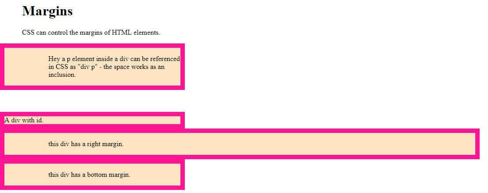

WebDevToolBox
Home
About
Contact
Choose a tool
HTML Input Slider
CSS Margins
CSS Margins In Another
JS Events
CSS Margins

Margins are distances between two divs. Look at the code below.
HTML
<!DOCTYPE html> <html lang="en"> <head> <meta charset="UTF-8"> <meta name="viewport" content="width=device-width, initial-scale=1.0"> <meta http-equiv="X-UA-Compatible" content="ie=edge"> <link rel="stylesheet" href="./css/styleMargins.css"> <title>MarginsCSS</title> </head> <body> <h1>Margins</h1> <p>CSS can control the margins of HTML elements.</p> <div><p>Hey a p element inside a div can be referenced in CSS as "div p" - the space works as an inclusion.</p></div> <div id="ndiv">A div with id.</div> <div class="right-margin"><p>this div has a right margin.</p></div> <div class="bottom-margin"><p>this div has a bottom margin.</p></div> <div class="margin-one-value"><p>Hey a p element inside a div with one value.</p></div> <div class="margin-two-value"><p>Hey a p element inside a div with two values.</p></div> <div class="margin-four-value"><p>Hey a p element inside a div with four values.</p></div> <div class="auto-margin"><p>Hey a p element inside a div with auto values.</p></div> </body> </html>
CSS
h1, p{ /* for all h1 and p elems */ margin-left: 50px; } div p{ /* the p inside a div is referenced */ margin-left: 100px; } div{ /* for any div this works */ width: 400px; /* with perfect fits with the text */ height: 50%; background-color: bisque; border: 10px solid deeppink; } #ndiv{ margin-top: 50px; } .right-margin{ /* for any element with class name "right-margin" */ width: 80%; margin-right: 200px; } .bottom-margin{ /* for any element with class name "bottom-margin" */ margin-bottom: 50px; } .margin-one-value{ /* in any direction if one value for margin */ margin: 100px; } .margin-two-value{ /* in any direction for two value for margins in: top-bottom 200px, right-left 50px*/ margin: 200px 50px; } .margin-four-value{ /* in any direction for two value for margins in: top-200px, right-50px bottom-20px left-30px*/ margin: 200px 50px 20px 30px; } .auto-margin{ /* auto margin - any element has auto margin as a class available */ /* to center horizontally */ margin: auto; }
JS